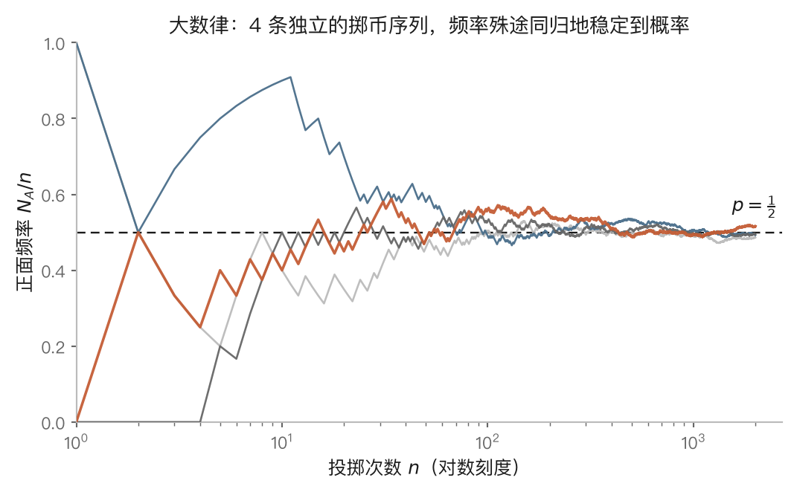
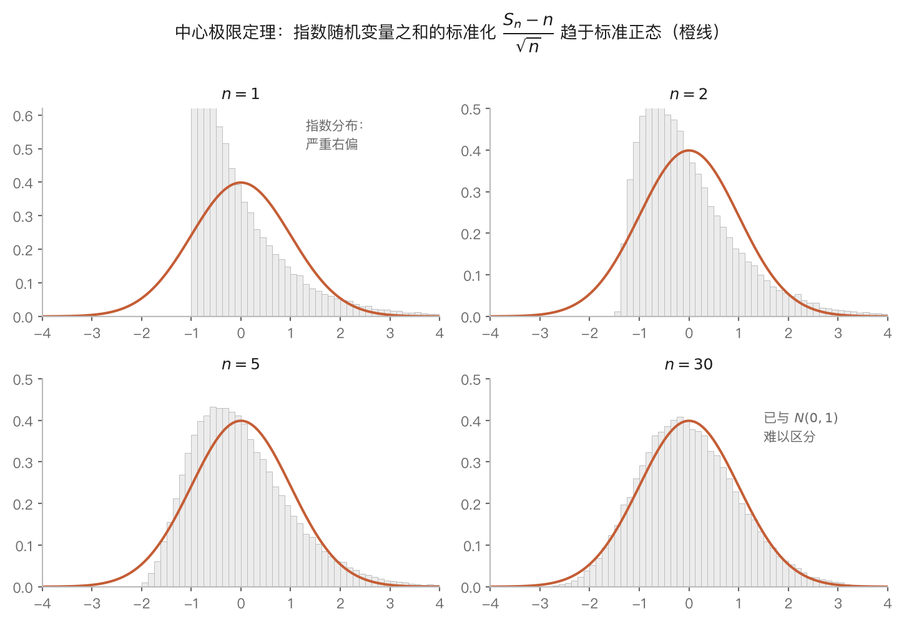

特征函数和概率极限定理
📖 本章地位
这是全书概率理论的顶峰。前四章的全部建设——概率空间、随机变量、独立性、数学期望与方差——都在为本章的两大定理作准备：大数律（频率稳定于概率）与中心极限定理（独立随机变量之和的分布趋于正态）。而证明这两大定理所用的核心工具——特征函数，本身就是一套值得单独学习的分析方法。本章各节与原书 §5.1–§5.6 一一对应。
5.0 导言：独立随机变量之和的分析学
本章的全部内容围绕一个对象展开：独立随机变量的部分和
$$ S_n = X_1 + X_2 + \cdots + X_n. $$
为什么这个对象值得用一整章研究？因为它是概率论联系现实的枢纽。第一章说过，概率的经验意义在于频率，而频率 $N_A/N$ 正是 $n$ 个独立示性变量的算术平均；测量误差是大量微小扰动的叠加；保险公司的总赔付是各保单赔付之和；统计学里的一切估计量几乎都由样本和构成。"多个独立随机源的叠加行为"是随机世界中最普遍的结构，而 $S_n$ 就是它的数学原型。
围绕 $S_n$，本章回答三个层层递进的问题：
第一个问题（§5.1–§5.2）：$S_n$ 的分布怎么算？第三章已经给出卷积公式，但卷积的计算极其繁琐——两个分布卷积尚可勉强完成，$n$ 个分布的 $n-1$ 重卷积在多数情形下没有闭式解。出路是变换方法：给每个分布配一个函数（母函数或特征函数），使得"分布的卷积"对应"函数的乘积"。乘法远比卷积容易，算完再变换回来即可。学过 Fourier 分析的读者会立即认出这个思路：特征函数恰是概率分布的 Fourier 变换，而"卷积定理"正是 Fourier 分析的核心恒等式。
第二个问题（§5.3）：正态分布如何推广到高维？一元正态在第二章登场时只是诸多分布之一，本章将看到它在特征函数的语言下具有异常整齐的结构，并由此建立多元正态分布的一般理论——这既是中心极限定理的极限对象，也是数理统计全部大厦的地基。
**第三个问题（§5.4–§5.6）：$n \to \infty$ 时 $S_n$ 表现如何？**这是本章的顶峰。大数律断言算术平均 $S_n/n$ 收敛到期望 $\mu$——第一章"频率趋于概率"的直觉在此成为定理；中心极限定理进一步给出涨落的精确形状：$S_n$ 围绕 $n\mu$ 的偏差，除以 $\sqrt{n}\,\sigma$ 之后趋于标准正态分布——这解释了正态分布在自然界的普遍存在。为了严格叙述这些定理，还需要辨析随机变量的几种收敛方式（依概率、几乎处处、依分布、均方），这是 *§5.6 的任务。
一句话概括本章：先造变换（把卷积化为乘法），再取极限（把有限和送往无穷）。第一章埋下的种子——频率的稳定性、Borel–Cantelli 引理、"以概率 1"的语言——都将在本章收获。
- 本章的中心对象是独立随机变量的部分和 $S_n$；它是频率、测量误差、统计量的公共数学原型。
- 三步纲领：变换工具（母函数、特征函数）→ 多元正态 → 极限定理（大数律、中心极限定理）。
- 特征函数 = 概率分布的 Fourier 变换；其核心功能是把卷积化为乘法。
5.1 概率母函数：为"求和"而设的第一个变换
对应原书 §5.1。本节的随机变量都取非负整数值。
定义与三重功能
在引入一般的特征函数之前，先在最简单的情形——取非负整数值的随机变量——上熟悉变换方法的运作方式。对这类 $X$ 与 $s \in [-1, 1]$，随机变量 $s^X$ 有界（$|s^X| \leq 1$，约定 $0^0 = 1$），故期望存在，可以定义
$$ g(s) = \mathrm{E}\,s^X = \sum_{j=0}^{\infty} s^j \, P(X = j), \qquad s \in [-1, 1]. \tag{1.1} $$
称 $g(s)$ 为 $X$ 的概率母函数（简称母函数）。
从形式上看，母函数就是把概率列 $\{P(X=j)\}$ 当作系数编成的幂级数——"母"字的含义正是"生成"：整个分布列被压缩进一个解析函数之中。级数在 $[-1,1]$ 上绝对收敛（系数非负且和为 1），因此可以放心地逐项求导、逐项取极限，这是下面一切性质的分析学基础。
定理 1.1 设 $g(s)$ 是 $X$ 的母函数，则
- $P(X = k) = \dfrac{g^{(k)}(0)}{k!}$，$k = 0, 1, \cdots$；
- $\mathrm{E}X = g'(1)$；
- 若 $\mathrm{E}X < \infty$，则 $\operatorname{var}(X) = g''(1) + g'(1) - [g'(1)]^2$；
- 若 $X_1, \cdots, X_n$ 相互独立，母函数分别为 $g_i(s)$，则 $Y = X_1 + \cdots + X_n$ 的母函数为
$$ g_Y(s) = g_1(s) \, g_2(s) \cdots g_n(s). $$
这四条恰好对应母函数的三重功能，逐一解读：
功能一：分布的完整存储（性质 1）。幂级数的系数由其在原点的各阶导数唯一确定（Taylor 展开），故母函数与概率分布相互唯一决定。这一条是变换方法合法性的保证：在母函数的世界里算出结果后，可以无歧义地翻译回分布的世界。实际操作中往往不必逐阶求导——把算出的 $g_Y(s)$ 展开成幂级数、逐项读出系数即可。
功能二：矩的提取器（性质 2、3）。对 (1.1) 逐项求导得 $g'(s) = \sum j s^{j-1} P(X=j)$，取 $s = 1$ 即为 $\mathrm{E}X$；求导两次取 $s=1$ 得 $g''(1) = \mathrm{E}[X(X-1)]$（称为二阶阶乘矩），于是
$$ \operatorname{var}(X) = \mathrm{E}[X(X-1)] + \mathrm{E}X - (\mathrm{E}X)^2 = g''(1) + g'(1) - [g'(1)]^2. $$
求导比对分布列直接求和往往省力得多。
功能三：卷积的乘法化（性质 4）。证明只有一行：由独立性，$s^{X_1}, \cdots, s^{X_n}$ 相互独立（第二章定理：独立随机变量的函数仍独立），故
$$ g_Y(s) = \mathrm{E}\,s^{X_1 + \cdots + X_n} = \mathrm{E}\,s^{X_1} \cdots \mathrm{E}\,s^{X_n} = g_1(s) \cdots g_n(s). $$
这就是本章导言许诺的"卷积变乘法"。注意乘法化的根源完全在于指数函数把和化为积（$s^{X+Y} = s^X s^Y$）加上独立变量乘积的期望等于期望的乘积——这两点在特征函数处将原样重现。
三大离散分布的母函数与"可加性"
例 1.1（二项分布）：$B(n,p)$ 的母函数由二项式定理立得
$$ g(s) = \sum_{j=0}^{n} s^j C_n^j p^j q^{n-j} = (q + sp)^n. \tag{1.2} $$
设 $X_i \sim B(n_i, p)$ 相互独立，则和的母函数为 $(q+sp)^{n_1 + \cdots + n_m}$，即
$$ X_1 + \cdots + X_m \sim B(n_1 + \cdots + n_m,\, p). $$
同参数 $p$ 的二项分布对独立求和封闭。这本是直观的（$n_1$ 次试验接着做 $n_2$ 次试验，成功总数当然服从 $B(n_1+n_2, p)$），但母函数给出的证明完全不依赖直观，且三行即毕——请与第三章用卷积公式验证同一事实的计算量对比，变换方法的效率一目了然。
例 1.2（泊松分布）：$\mathcal{P}(\lambda)$ 的母函数
$$ g(s) = \sum_{k=0}^{\infty} s^k \frac{\lambda^k}{k!} \mathrm{e}^{-\lambda} = \mathrm{e}^{\lambda(s-1)}. \tag{1.3} $$
独立的 $\mathcal{P}(\lambda_i)$ 之和的母函数为 $\mathrm{e}^{(\lambda_1 + \cdots + \lambda_m)(s-1)}$，故泊松分布对独立求和封闭，参数相加。这条可加性在第六章泊松过程中是基石性的事实。
例 1.3（几何分布与帕斯卡分布）：几何分布 $P(X=j) = pq^{j-1}$（$j \geq 1$）的母函数
$$ g(s) = \sum_{j=1}^{\infty} s^j p q^{j-1} = \frac{sp}{1 - sq}. \tag{1.4} $$
$m$ 个独立同分布几何变量之和 $S_m$（意义：第 $m$ 次成功时的总试验次数）的母函数为 $\left(\frac{sp}{1-sq}\right)^m$。对它作幂级数展开（用负指数二项展开 $(1-x)^{-m} = \sum_j C_{m+j-1}^{j} x^j$），读出系数：
$$ P(S_m = k) = C_{k-1}^{m-1} p^m q^{k-m}, \qquad k = m, m+1, \cdots. $$
这就是帕斯卡分布（负二项分布）。此例演示了功能一的完整流程：不必做任何卷积，展开母函数即得到和的分布列。系数 $C_{k-1}^{m-1}$ 的组合意义也值得核对一遍：$S_m = k$ 要求第 $k$ 次恰为第 $m$ 次成功，即前 $k-1$ 次中恰有 $m-1$ 次成功——两种途径殊途同归，互相印证。
**例 1.4（掷骰子问题）**演示母函数处理"具体计数"的能力：三颗骰子总点数为 9 的概率。单颗骰子的母函数
$$ g(s) = \frac{1}{6}(s + s^2 + \cdots + s^6) = \frac{s(1 - s^6)}{6(1-s)}, $$
故总点数 $Y$ 的母函数 $g_Y(s) = g(s)^3 = \frac{s^3 (1-s^6)^3}{6^3 (1-s)^3}$。利用 $(1-s)^{-3} = \sum_k C_{k+2}^{2} s^k$ 与 $(1-s^6)^3 = 1 - 3s^6 + 3s^{12} - s^{18}$，提取 $s^9$ 的系数：来自 $s^3 \cdot 1 \cdot C_8^2 s^6$ 与 $s^3 \cdot (-3s^6) \cdot C_2^2 s^0$ 两项，得
$$ P(Y = 9) = \frac{C_8^2 - 3}{6^3} = \frac{25}{216}. $$
这个 17 世纪困扰赌徒的计数问题，在母函数框架下化为多项式系数的机械提取。
- 母函数 $g(s) = \mathrm{E}s^X$ 把分布列编码为幂级数；与分布相互唯一决定。
- 三重功能：系数存储分布（展开读系数）、导数提取矩（$\mathrm{E}X = g'(1)$，$\operatorname{var}(X) = g''(1)+g'(1)-[g'(1)]^2$）、独立和对应乘积。
- 二项（同 $p$）、泊松对独立求和封闭；几何分布之和为帕斯卡分布——都由母函数三行推出。
- 乘法化的根源：指数化和为积 + 独立乘积的期望分解。此结构将原样迁移到特征函数。
5.2 特征函数：概率分布的 Fourier 变换
对应原书 §5.2。本章乃至全书最重要的工具在本节登场。
A. 定义：为什么是 $\mathrm{e}^{\mathrm{i}tX}$
母函数虽好，但只适用于取非负整数值的随机变量——$\mathrm{E}s^X$ 对连续型 $X$ 或取负值的 $X$ 未必收敛。要把变换方法推广到一切随机变量，需要换一个"检验函数"。选择是把 $s^X$ 换成 $\mathrm{e}^{\mathrm{i}tX}$（$\mathrm{i} = \sqrt{-1}$）。
先补充定义：若 $\xi, \eta$ 是随机变量，称 $Z = \xi + \mathrm{i}\eta$ 为复值随机变量，并定义 $\mathrm{E}Z = \mathrm{E}\xi + \mathrm{i}\,\mathrm{E}\eta$（实部虚部分别取期望）。于是对任意实随机变量 $X$，由 Euler 公式 $\mathrm{e}^{\mathrm{i}tX} = \cos(tX) + \mathrm{i}\sin(tX)$，可定义：
定义 2.2（特征函数）
$$ \phi(t) = \mathrm{E}\,\mathrm{e}^{\mathrm{i}tX} = \mathrm{E}\cos(tX) + \mathrm{i}\,\mathrm{E}\sin(tX), \qquad t \in \mathbf{R}. \tag{2.3} $$
这个定义的第一个要点是普适性：$|\mathrm{e}^{\mathrm{i}tX}| = 1$，即 $\cos(tX)$ 与 $\sin(tX)$ 都是有界随机变量，其期望对任何分布都存在。对比之下，若采用实指数 $\mathrm{E}\mathrm{e}^{tX}$（称为矩母函数），则对重尾分布可能处处发散（本节习题中的 Cauchy 分布即是如此，它连数学期望都不存在，但特征函数依然完好）。用单位圆上的复指数替代实指数，以牺牲"实值"换取"总存在"，是特征函数设计中最深思熟虑的一步。
第二个要点是身份：若 $X$ 有密度 $f(x)$，则
$$ \phi(t) = \int_{-\infty}^{\infty} \mathrm{e}^{\mathrm{i}tx} f(x)\, \mathrm{d}x, $$
这正是密度 $f$ 的 Fourier 变换（至多相差符号约定）。因此特征函数并非概率论的独创，而是把数学分析中成熟的 Fourier 理论整体引入概率论的接口：Fourier 变换的可逆性对应分布的唯一确定，卷积定理对应独立和的乘法化，变换的连续性对应分布的收敛。下面逐条展开。
唯一性：逆转公式
定理 2.1（逆转公式） 设 $\phi(t)$ 是 $X$ 的特征函数，$F(x)$ 是其分布函数。若 $F$ 在 $a, b$ 连续，则
$$ F(b) - F(a) = \frac{1}{2\pi} \lim_{T \to \infty} \int_{-T}^{T} \frac{\mathrm{e}^{-\mathrm{i}ta} - \mathrm{e}^{-\mathrm{i}tb}}{\mathrm{i}t} \phi(t)\, \mathrm{d}t. \tag{2.4} $$
（证明超出本书范围，原书亦略去。）公式的具体形状不必记忆，需要记住的是它的存在性所宣告的事实：分布函数可以从特征函数完整重构。结合定义方向的显然事实（分布决定特征函数），得到本节的支柱结论：
特征函数与分布函数相互唯一决定。
这条唯一性定理是整个变换方法的合法性证书。此后凡要证明"随机变量 $Y$ 服从分布 $F$"，一条全新的路径被打开：算出 $Y$ 的特征函数，认出它是 $F$ 的特征函数，即证毕。§5.3 判定多元正态、§5.5 证明中心极限定理，走的都是这条路。
五条基本性质
定理 2.2 设 $\phi(t) = \mathrm{E}\mathrm{e}^{\mathrm{i}tX}$，则
- $\phi(0) = 1$，$|\phi(t)| \leq 1$，$\phi(-t) = \overline{\phi(t)}$；
- $\phi$ 在 $(-\infty, \infty)$ 上一致连续；
- 若 $\mathrm{E}X^k$ 存在，则 $\phi^{(k)}(0) = \mathrm{i}^k \, \mathrm{E}X^k$；
- 非负定性：对任何实数 $t_1, \cdots, t_n$ 与复数 $a_1, \cdots, a_n$，$\sum_{k,j} \phi(t_k - t_j) a_k \bar{a}_j \geq 0$；
- 若 $X_1, \cdots, X_n$ 相互独立，则 $Y = X_1 + \cdots + X_n$ 的特征函数为 $\phi_Y(t) = \phi_1(t) \cdots \phi_n(t)$。
逐条解析其来源与用途：
性质 1 是三条即时推论：$\phi(0) = \mathrm{E}1 = 1$（归一性的化身）；$|\phi(t)| \leq \mathrm{E}|\mathrm{e}^{\mathrm{i}tX}| = 1$（原书用内积不等式 $(\mathrm{E}\cos tX)^2 + (\mathrm{E}\sin tX)^2 \leq \mathrm{E}\cos^2 tX + \mathrm{E}\sin^2 tX = 1$ 严格给出）；共轭对称性来自 $\sin$ 的奇性。由此还可读出一条实用推论：$X$ 的分布关于原点对称当且仅当 $\phi(t)$ 取实值。
**性质 2（一致连续）**的证明手法值得学习，它是概率论中标准的"截断—分治"论证：要估计 $|\phi(t) - \phi(s)| \leq \mathrm{E}|\mathrm{e}^{\mathrm{i}(t-s)X} - 1|$，将积分区域按 $|x| \leq M$ 与 $|x| > M$ 一分为二——尾部用"分布的质量集中在有界区间"控制（取 $M$ 使尾概率小于 $\varepsilon/4$，被积函数至多为 2），主体部分用"$\mathrm{e}^{\mathrm{i}u}$ 在 $u=0$ 附近的连续性"控制（$|t-s|$ 充分小时 $|\mathrm{e}^{\mathrm{i}(t-s)x} - 1|$ 在 $|x| \leq M$ 上一致地小）。两块合计不超过 $\varepsilon$，且估计与 $t$ 的位置无关，故为一致连续。这种"用截断把无界问题化为有界问题"的技术在 §5.5 的 Lindeberg 条件中将再次出现。
**性质 3（矩的提取）**是母函数功能二的对应物：在积分号下对 $t$ 求导 $k$ 次（$\mathrm{E}|X|^k < \infty$ 保证求导与期望可交换），得 $\phi^{(k)}(t) = \mathrm{i}^k \mathrm{E}(X^k \mathrm{e}^{\mathrm{i}tX})$，取 $t = 0$ 即得。特别地
$$ \phi'(0) = \mathrm{i}\,\mathrm{E}X, \qquad \phi''(0) = -\mathrm{E}X^2. $$
这两个等式是 §5.5 中心极限定理证明的全部原料，务必牢记。
**性质 4（非负定性）**的证明是一次漂亮的"配平方"：双重和可整理为 $\mathrm{E}\big|\sum_k a_k \mathrm{e}^{\mathrm{i}t_k X}\big|^2 \geq 0$。这条性质在本课程中不直接使用，但值得知道其深度：Bochner 定理断言，"$\phi(0)=1$ + 连续 + 非负定"恰好刻画了全部特征函数——它是判断"给定函数是否为某个分布的特征函数"的完整判据。
**性质 5（独立和的乘法化）**是特征函数存在的第一理由，机制与母函数完全相同：$\mathrm{e}^{\mathrm{i}t(X_1 + \cdots + X_n)} = \prod_j \mathrm{e}^{\mathrm{i}tX_j}$，独立性使期望对乘积分解。必须警惕逆命题不成立：$\phi_{X+Y} = \phi_X \phi_Y$ 推不出 $X, Y$ 独立。习题 5.3 给出反例——取 $X$ 服从标准 Cauchy 分布、$Y = X$（完全相依），则 $\phi_X(t) = \mathrm{e}^{-|t|}$，$\phi_{X+Y}(t) = \phi_{2X}(t) = \mathrm{e}^{-2|t|} = \phi_X(t)\phi_Y(t)$，乘法等式成立而独立性荡然无存。
常见分布的特征函数：正态的两种推导
离散分布的特征函数由母函数直接翻译（形式上以 $\mathrm{e}^{\mathrm{i}t}$ 代 $s$）：
| 分布 | 母函数 $g(s)$ | 特征函数 $\phi(t)$ |
|---|---|---|
| 二项 $B(n,p)$ | $(q+sp)^n$ | $(q + p\mathrm{e}^{\mathrm{i}t})^n$ |
| 泊松 $\mathcal{P}(\lambda)$ | $\mathrm{e}^{\lambda(s-1)}$ | $\exp[\lambda(\mathrm{e}^{\mathrm{i}t}-1)]$ |
| 几何 | $\dfrac{sp}{1-sq}$ | $\dfrac{p\mathrm{e}^{\mathrm{i}t}}{1-q\mathrm{e}^{\mathrm{i}t}}$ |
连续分布中最重要的当属例 2.4（正态分布）：
$$ X \sim N(\mu, \sigma^2) \implies \phi(t) = \exp\Big(\mathrm{i}\mu t - \frac{\sigma^2 t^2}{2}\Big). \tag{2.9} $$
原书对标准正态给出了两种推导，代表两种典型的思维方式，都值得掌握：
形式推导（配方法）：把 $\mathrm{i}$ 当作普通常数，在指数中配方：
$$ \phi(t) = \frac{1}{\sqrt{2\pi}} \int_{-\infty}^{\infty} \mathrm{e}^{\mathrm{i}tx - x^2/2}\, \mathrm{d}x = \mathrm{e}^{-t^2/2} \cdot \frac{1}{\sqrt{2\pi}} \int_{-\infty}^{\infty} \mathrm{e}^{-(x - \mathrm{i}t)^2/2}\, \mathrm{d}x = \mathrm{e}^{-t^2/2}. $$
末步宣称"平移 $\mathrm{i}t$ 后的 Gauss 积分仍为 $\sqrt{2\pi}$"——这需要复分析中的围道积分论证（沿矩形回路应用 Cauchy 定理），故称"形式的"。
严格推导（微分方程法）：注意 $\sin(tx)\mathrm{e}^{-x^2/2}$ 为奇函数，虚部积分为零，故 $\phi(t) = \frac{1}{\sqrt{2\pi}}\int \cos(tx) \mathrm{e}^{-x^2/2} \mathrm{d}x$ 为实值。在积分号下求导并分部积分（利用 $x\mathrm{e}^{-x^2/2}\mathrm{d}x = -\mathrm{d}\mathrm{e}^{-x^2/2}$）：
$$ \phi'(t) = -\frac{1}{\sqrt{2\pi}} \int x \sin(tx) \mathrm{e}^{-x^2/2} \mathrm{d}x = -t\phi(t). $$
于是 $\frac{\mathrm{d}}{\mathrm{d}t}\big[\phi(t)\mathrm{e}^{t^2/2}\big] = 0$，即 $\phi(t)\mathrm{e}^{t^2/2}$ 为常数；由 $\phi(0)=1$ 定出常数为 1，得 $\phi(t) = \mathrm{e}^{-t^2/2}$。"对参数求导—获得常微分方程—用初值定解"是含参积分的经典手法，数学分析下册的功力在此兑现。一般情形由线性变换立得：$Y = \mu + \sigma X$ 时 $\phi_Y(t) = \mathrm{e}^{\mathrm{i}\mu t}\phi_X(\sigma t)$。
由 (2.9) 与性质 5 立即得到正态分布的可加性：独立的 $N(\mu_j, \sigma_j^2)$ 之和服从 $N\big(\sum \mu_j, \sum \sigma_j^2\big)$——特征函数相乘即指数相加。至此，二项、泊松、正态三大分布族的可加性获得了完全统一的解释：它们的特征函数在乘法下形状不变，只有参数相加。这种"结构上的封闭性"绝非巧合，其根源将在中心极限定理处显明。
依分布收敛与连续性定理
变换工具的最后一块拼图，是让特征函数能够处理极限问题。先精确定义"分布的收敛"：
定义 2.3（依分布收敛） 设 $X$ 有分布函数 $F$，$X_n$ 有分布函数 $F_n$。若在 $F$ 的每个连续点 $x$ 处 $F_n(x) \to F(x)$，则称 $X_n$ 依分布收敛到 $X$，记作 $X_n \xrightarrow{d} X$；等价地称 $F_n$ 弱收敛到 $F$，记 $F_n \xrightarrow{w} F$。
两处细节需要辨明。其一，为何只要求连续点处收敛？考虑退化的例子：$X_n \equiv 1/n$ 显然应当收敛到 $X \equiv 0$，但在跳跃点 $x = 0$ 处 $F_n(0) = 0$ 恒成立而 $F(0) = 1$，若苛求处处收敛则这个最自然的收敛都不成立。排除（至多可列个）间断点是使定义合理的最小让步。其二，依分布收敛陈述的是分布函数的收敛而非随机变量本身的接近——$X_n$ 与 $X$ 甚至可以定义在不同的概率空间上。其实用价值由 (2.13) 表明：对 $F$ 的连续点 $a < b$，
$$ P(a < X_n \leq b) \to P(a < X \leq b), $$
即当 $n$ 充分大时，可用极限分布近似计算 $X_n$ 的概率。中心极限定理的全部应用价值都建立在这一点上。
定理 2.3（连续性定理，Lévy） $X_n \xrightarrow{d} X$ 的充分必要条件是对每个 $t \in \mathbf{R}$，
$$ \lim_{n \to \infty} \phi_n(t) = \phi(t). $$
（证明超出本书范围。）这条定理宣告：分布的弱收敛与特征函数的逐点收敛完全等价。分布函数的收敛难以直接验证（要对付间断点、要控制整个函数），而特征函数的逐点收敛只是普通数列极限——连续性定理把前者整体折算为后者。§5.5 证明中心极限定理时，全部工作将只是计算一个数列极限。
使用时有一个精细之处（原书在随机向量版本定理 2.4(3) 中点明）：若只知道 $\phi_n(t)$ 逐点收敛到某函数 $g(t)$ 而不预知 $g$ 是特征函数，则需补验 $g$ 在 $t = 0$ 处连续，方可断言 $g$ 是某分布的特征函数且 $X_n$ 依分布收敛于它。这个条件防止概率"泄漏到无穷远"（例如 $X_n \sim N(0, n)$ 时 $\phi_n(t) = \mathrm{e}^{-nt^2/2}$ 收敛到在原点间断的函数，相应地 $X_n$ 不依分布收敛到任何随机变量）。
B. 随机向量的特征函数
对 $n$ 维随机向量 $\mathbf{X} = (X_1, \cdots, X_n)$，特征函数定义为
$$ \phi(\mathbf{t}) = \mathrm{E}\exp\big(\mathrm{i}\,\mathbf{t}\mathbf{X}^{\mathrm{T}}\big) = \mathrm{E}\exp\Big(\mathrm{i}\sum_{j=1}^n t_j X_j\Big), \qquad \mathbf{t} = (t_1, \cdots, t_n) \in \mathbf{R}^n. \tag{2.15} $$
一元理论的三大支柱平行地成立（定理 2.4）：
- 唯一性：$\phi(\mathbf{t})$ 与联合分布相互唯一决定；
- 独立性判据：$X_1, \cdots, X_n$ 相互独立 $\iff \phi(\mathbf{t}) = \phi_1(t_1)\phi_2(t_2)\cdots\phi_n(t_n)$（注意：这里是联合特征函数对不同变元的分解，与性质 5 中"同一变元 $t$ 下和的特征函数相乘"是两回事，后者不能反推独立）；
- 连续性定理：若 $\phi_m(\mathbf{t})$ 收敛到在 $\mathbf{t} = \mathbf{0}$ 连续的函数 $g(\mathbf{t})$，则 $g$ 是某随机向量 $\mathbf{Y}$ 的特征函数，且对任何常向量 $\mathbf{a}$，$\mathbf{a}\mathbf{X}_m^{\mathrm{T}} \xrightarrow{d} \mathbf{a}\mathbf{Y}^{\mathrm{T}}$。
第 3 条中"检验一切线性组合"的表述，正是下一节 Cramér–Wold 思想的雏形：高维分布问题可以通过全体一维投影来把握。多元正态理论将把这一思想用到极致。
- $\phi(t) = \mathrm{E}\mathrm{e}^{\mathrm{i}tX}$ 对一切分布存在（$|\mathrm{e}^{\mathrm{i}tX}|=1$），本质是分布的 Fourier 变换；矩母函数 $\mathrm{E}\mathrm{e}^{tX}$ 则可能不存在。
- 支柱一（唯一性/逆转公式）：特征函数与分布相互唯一决定——"认出特征函数"即确定分布。
- 支柱二（乘法化）：独立和的特征函数 = 特征函数之积；但乘法等式不能反推独立（Cauchy 反例）。
- 支柱三（连续性定理）：依分布收敛 $\iff$ 特征函数逐点收敛；极限函数需在 0 连续以防概率逃逸。
- $\phi'(0) = \mathrm{i}\mathrm{E}X$，$\phi''(0) = -\mathrm{E}X^2$；正态 $N(\mu,\sigma^2)$ 的特征函数 $\exp(\mathrm{i}\mu t - \sigma^2t^2/2)$；二项、泊松、正态的可加性统一于"特征函数族对乘法封闭"。
5.3 多元正态分布：以线性结构定义的分布族
对应原书 §5.3。本节向量均为列向量。
构造性定义：正态 = 标准正态的线性像
如何把一元正态推广到 $n$ 维？直接推广密度公式是一条路，但原书选择了一条更深刻的路径——构造性定义：
定义 3.1 设 $\boldsymbol{\mu}$ 为 $n$ 维常向量，$B$ 为 $n \times m$ 常矩阵，$\varepsilon_1, \cdots, \varepsilon_m$ 相互独立且都服从 $N(0,1)$。称
$$ \mathbf{X} = \boldsymbol{\mu} + B\boldsymbol{\varepsilon} \tag{3.1} $$
服从 $n$ 元正态分布，记作 $\mathbf{X} \sim N(\boldsymbol{\mu}, BB^{\mathrm{T}})$。当 $BB^{\mathrm{T}}$ 退化（不满秩）时称为退化正态分布。
一句话概括：多元正态就是独立标准正态源经过线性变换（加平移）所能产生的一切分布。这个定义的优越性体现在三处：其一，它不预设密度存在，退化情形（例如 $X_2 = X_1$，全部概率集中在一条直线上）被自然涵盖；其二，线性运算下的封闭性成为定义的直接推论而非需要证明的定理；其三，它给出了模拟多元正态随机数的现成算法（生成独立标准正态再作线性组合）。
由 $\mathrm{E}\boldsymbol{\varepsilon} = \mathbf{0}$、$\mathrm{E}(\boldsymbol{\varepsilon}\boldsymbol{\varepsilon}^{\mathrm{T}}) = I$ 直接算得
$$ \mathrm{E}\mathbf{X} = \boldsymbol{\mu}, \qquad \Sigma \overset{\text{def}}{=} \mathrm{E}\big[(\mathbf{X}-\boldsymbol{\mu})(\mathbf{X}-\boldsymbol{\mu})^{\mathrm{T}}\big] = BB^{\mathrm{T}}, \tag{3.2} $$
即记号 $N(\boldsymbol{\mu}, \Sigma)$ 中两个参数分别是均值向量与协方差矩阵（第四章已证协方差矩阵必为非负定对称阵；反之任何非负定对称阵都可写成 $BB^{\mathrm{T}}$，故参数域恰为全部非负定阵）。
特征函数与参数的唯一性
利用 $\boldsymbol{\varepsilon}$ 的特征函数 $\exp(-\mathbf{t}^{\mathrm{T}}\mathbf{t}/2)$ 与线性变换规则，两行算出 $\mathbf{X}$ 的特征函数：
$$ \phi_{\mathbf{X}}(\mathbf{t}) = \exp\Big[\mathrm{i}\,\mathbf{t}^{\mathrm{T}}\boldsymbol{\mu} - \frac{1}{2}\mathbf{t}^{\mathrm{T}}\Sigma\,\mathbf{t}\Big]. \tag{3.3} $$
这个表达式只含 $\boldsymbol{\mu}$ 与 $\Sigma$，结合特征函数的唯一性得到关键结论：多元正态分布由均值向量与协方差矩阵完全确定。矩阵 $B$ 本身并不唯一（不同的 $B$ 可给出相同的 $BB^{\mathrm{T}}$），但分布只认 $\Sigma$。反之凡具有形如 (3.3) 特征函数的随机向量必可表示成 (3.1)（习题 5.17），故构造性定义与特征函数定义完全等价。
定理 3.1（一维投影判据） $\mathbf{X} \sim N(\boldsymbol{\mu}, \Sigma)$ 的充分必要条件是：对任何常向量 $\mathbf{a} \in \mathbf{R}^n$，线性组合
$$ \mathbf{a}^{\mathrm{T}}\mathbf{X} \sim N(\mathbf{a}^{\mathrm{T}}\boldsymbol{\mu},\ \mathbf{a}^{\mathrm{T}}\Sigma\,\mathbf{a}). $$
证明是特征函数方法的教科书式演示：必要性方向，$\mathbf{a}^{\mathrm{T}}\mathbf{X}$ 的特征函数 $\mathrm{E}\exp[\mathrm{i}(t\mathbf{a}^{\mathrm{T}})\mathbf{X}]$ 只需在 (3.3) 中以 $t\mathbf{a}$ 代 $\mathbf{t}$，认出恰为一元正态 $N(\mathbf{a}^{\mathrm{T}}\boldsymbol{\mu}, \mathbf{a}^{\mathrm{T}}\Sigma\mathbf{a})$ 的特征函数；充分性方向反向取 $t=1$ 重构出 (3.3)。此定理提供了实践中最常用的判别法："逐个检验所有一维线性组合是否正态"。
易错警示
定理 3.1 要求一切线性组合正态，仅各分量 $X_1, \cdots, X_n$ 分别正态远远不够。标准反例：$X \sim N(0,1)$，$S$ 与 $X$ 独立且 $P(S = \pm 1) = 1/2$，令 $Y = SX$。则 $Y \sim N(0,1)$（对称性），但 $X + Y$ 以概率 $1/2$ 恰等于 0——一个既非连续又非退化到单点的分布，绝非正态，故 $(X, Y)$ 不是二元正态。"边缘正态 $\neq$ 联合正态"是本节第一大陷阱。
五条常用性质
性质 1（线性封闭性） $\mathbf{X} \sim N(\boldsymbol{\mu}, \Sigma)$，$A$ 为常矩阵，则 $A\mathbf{X} \sim N(A\boldsymbol{\mu}, A\Sigma A^{\mathrm{T}})$。证明由定义立得：$A\mathbf{X} = A\boldsymbol{\mu} + (AB)\boldsymbol{\varepsilon}$ 本身就是 (3.1) 的形状。正态族在一切线性运算下封闭——求边缘分布（取 $A$ 为选择行的矩阵）、求分量和（取 $A = (1,\cdots,1)$）、作坐标旋转，结果统统还是正态，且参数按 $A\boldsymbol{\mu}$、$A\Sigma A^{\mathrm{T}}$ 机械更新。多元正态计算的十之八九不过是这条性质的反复使用。
性质 2（分块独立） 若 $\Sigma$ 为分块对角阵 $\begin{pmatrix} \Sigma_{11} & 0 \\ 0 & \Sigma_{22} \end{pmatrix}$，则对应的子向量 $\mathbf{X}_1, \mathbf{X}_2$ 相互独立。证明：分块结构使特征函数 (3.3) 的指数拆成两组变元之和，即 $\phi(\mathbf{t}_1, \mathbf{t}_2) = \phi_1(\mathbf{t}_1)\phi_2(\mathbf{t}_2)$，由随机向量独立性的特征函数判据（定理 3.2）即得。
性质 3（不相关 $\iff$ 独立） $\mathbf{X} \sim N(\boldsymbol{\mu}, \Sigma)$ 时，诸分量相互独立的充分必要条件是 $\Sigma$ 为对角阵。这是性质 2 的特例，却值得单独铭记，因为它是概率论中最著名的"特殊等价"：一般场合"独立 $\Rightarrow$ 不相关"而逆命题不真（第四章已有反例），唯独在联合正态的前提下，不相关（协方差为零）就足以推出独立。使用时必须核查前提是"联合正态"而非"各自正态"——结合上文的 $Y = SX$ 反例：$\operatorname{cov}(X, Y) = \mathrm{E}(SX^2) = \mathrm{E}S \cdot \mathrm{E}X^2 = 0$，不相关，却显然不独立（$|Y| = |X|$）。
性质 4（密度公式） 当 $\Sigma$ 正定时 $\mathbf{X}$ 为连续型，联合密度为
$$ f(\mathbf{x}) = \frac{1}{(2\pi)^{n/2}\sqrt{\det \Sigma}} \exp\Big[-\frac{1}{2}(\mathbf{x}-\boldsymbol{\mu})^{\mathrm{T}}\Sigma^{-1}(\mathbf{x}-\boldsymbol{\mu})\Big]. \tag{3.8} $$
证明用第三章的随机向量变换定理：$\mathbf{X} = \boldsymbol{\mu} + B\boldsymbol{\varepsilon}$（$B$ 可取可逆方阵）是 $\boldsymbol{\varepsilon}$ 的可逆线性变换，Jacobi 行列式为 $|\det B^{-1}| = (\det\Sigma)^{-1/2}$，代入 $\boldsymbol{\varepsilon}$ 的密度即得。注意逻辑顺序：密度是定义的推论而非定义本身——当 $\Sigma$ 退化时 (3.8) 无意义（$\Sigma^{-1}$ 不存在），但分布本身依然良好。密度的等值面是椭球 $(\mathbf{x}-\boldsymbol{\mu})^{\mathrm{T}}\Sigma^{-1}(\mathbf{x}-\boldsymbol{\mu}) = c$，$\Sigma$ 的特征向量给出椭球主轴的方向、特征值给出各轴的伸缩比。
性质 5（条件分布） $\Sigma$ 正定、按 $\mathbf{X} = \begin{pmatrix}\mathbf{X}_1 \\ \mathbf{X}_2\end{pmatrix}$ 分块时，给定 $\mathbf{X}_1 = \mathbf{x}_1$ 的条件下
$$ \mathbf{X}_2 \sim N\Big(\boldsymbol{\mu}_2 + \Sigma_{21}\Sigma_{11}^{-1}(\mathbf{x}_1 - \boldsymbol{\mu}_1),\ \ \Sigma_{22} - \Sigma_{21}\Sigma_{11}^{-1}\Sigma_{12}\Big). \tag{3.9} $$
原书证明的构思极具启发性，称为去相关（正交化）技巧：中心化 $\mathbf{Y}_i = \mathbf{X}_i - \boldsymbol{\mu}_i$ 后，寻找矩阵 $C$ 使 $\mathbf{Z}_2 = C\mathbf{Y}_1 + \mathbf{Y}_2$ 与 $\mathbf{Y}_1$ 不相关——解线性方程 $C\Sigma_{11} + \Sigma_{21} = 0$ 得 $C = -\Sigma_{21}\Sigma_{11}^{-1}$；由性质 3，联合正态下不相关即独立，于是条件化对 $\mathbf{Z}_2$ 毫无影响，条件分布问题化为 $\mathbf{Z}_2$ 的无条件分布问题，算出均值与协方差即毕。公式 (3.9) 读出两条深刻信息：条件均值是 $\mathbf{x}_1$ 的线性函数（这正是统计学中线性回归在正态世界成立的原因，系数 $\Sigma_{21}\Sigma_{11}^{-1}$ 即回归系数矩阵）；条件协方差不依赖 $\mathbf{x}_1$（观测值只平移预测中心，不改变预测的不确定度），且 $\Sigma_{22} - \Sigma_{21}\Sigma_{11}^{-1}\Sigma_{12} \preceq \Sigma_{22}$——信息使不确定性减小，减小量恰为 $\mathbf{X}_1$ 所能"解释"的部分。
两个通往统计学的例子
例 3.2（$\chi^2$ 分布） 独立标准正态平方和 $\xi_n^2 = X_1^2 + \cdots + X_n^2$ 的密度为
$$ f_n(z) = \frac{1}{2^{n/2}\Gamma(n/2)} z^{n/2-1}\mathrm{e}^{-z/2}, \qquad z \geq 0, \tag{3.10} $$
称 $\xi_n^2$ 服从自由度 $n$ 的 $\chi^2$ 分布，记 $\chi^2(n)$；对照第二章 $\Gamma$ 分布的密度可认出 $\chi^2(n) = \Gamma(n/2, 1/2)$。原书用归纳法证明：$n=1$ 时即第二章算过的 $X^2$ 的密度；归纳步对 $\xi_{n-1}^2 + X_n^2$ 用卷积公式，积分经换元化为 Beta 函数 $\mathrm{B}\big(\frac{n-1}{2}, \frac{1}{2}\big) = \frac{\Gamma(\frac{n-1}{2})\Gamma(\frac{1}{2})}{\Gamma(\frac{n}{2})}$，恰好把归纳常数修正到位。（更快的现代证法：验证 $\Gamma$ 分布的可加性——其特征函数为 $(1 - 2\mathrm{i}t)^{-n/2}$（习题 5.18），$n$ 个 $\chi^2(1)$ 相乘即得。）
例 3.3（样本均值与样本方差的独立性） 设 $X_1, \cdots, X_n$ 独立同分布于 $N(0,1)$，定义样本均值与样本方差
$$ \bar{X}_n = \frac{1}{n}\sum_{j=1}^n X_j, \qquad \widehat{\sigma}^2 = \frac{1}{n-1}\sum_{j=1}^n (X_j - \bar{X}_n)^2, $$
则 (1) $\bar{X}_n$ 与 $\widehat{\sigma}^2$ 相互独立；(2) $(n-1)\widehat{\sigma}^2 \sim \chi^2(n-1)$。
证明是性质 1 与性质 3 的一次优美合演。取正交矩阵 $T$，其第一行为 $\big(\frac{1}{\sqrt{n}}, \cdots, \frac{1}{\sqrt{n}}\big)$（其余行任意补全为规范正交基）。令 $\mathbf{Y} = T\mathbf{X}$，则由性质 1，$\mathbf{Y} \sim N(\mathbf{0}, TIT^{\mathrm{T}}) = N(\mathbf{0}, I)$——正交变换保持独立标准正态的联合分布不变（几何直观：标准正态密度是球对称的，旋转不改变它）。而按构造 $Y_1 = \sqrt{n}\,\bar{X}_n$，且正交变换保持长度 $\sum X_j^2 = \sum Y_j^2$，故
$$ (n-1)\widehat{\sigma}^2 = \sum_{j=1}^n X_j^2 - n\bar{X}_n^2 = \sum_{j=1}^n Y_j^2 - Y_1^2 = \sum_{j=2}^n Y_j^2 \sim \chi^2(n-1), $$
它只依赖 $Y_2, \cdots, Y_n$，而 $\bar{X}_n = Y_1/\sqrt{n}$ 只依赖 $Y_1$——两者由独立的分量构造，故独立。
这两个结论是数理统计的第一块奠基石：$t$ 检验、方差分析、置信区间的构造全部依赖"均值与方差独立、方差化为 $\chi^2$"这一对事实。自由度从 $n$ 降为 $n-1$ 的原因在此一目了然：约束 $\sum(X_j - \bar{X}_n) = 0$ 消耗了一个维度，正交变换把这层几何显式化了。**例 3.1（牛奶冰点检验）**则预演了假设检验的完整流程：在"未兑水"假设下 $\bar{X}_{16} \sim N(-0.545, (0.007)^2/16)$，观测到 $\bar{X}_{16} \geq -0.540$ 的概率仅 $1 - \Phi(2.857) \approx 0.0021$；小概率事件不应在一次观测中发生，故拒绝原假设，且误判概率有明确上界 0.0021——与第一章例 2.9 的逻辑一脉相承，而这一次，正态理论提供了精确的概率计算。
- 定义：$\mathbf{X} = \boldsymbol{\mu} + B\boldsymbol{\varepsilon}$——多元正态是独立标准正态的线性像；分布由 $(\boldsymbol{\mu}, \Sigma)$ 唯一决定，特征函数 $\exp(\mathrm{i}\mathbf{t}^{\mathrm{T}}\boldsymbol{\mu} - \frac12\mathbf{t}^{\mathrm{T}}\Sigma\mathbf{t})$。
- 判据：$\mathbf{X}$ 联合正态 $\iff$ 一切线性组合 $\mathbf{a}^{\mathrm{T}}\mathbf{X}$ 一元正态。各分量正态推不出联合正态（$Y = SX$ 反例）。
- 线性封闭：$A\mathbf{X} \sim N(A\boldsymbol{\mu}, A\Sigma A^{\mathrm{T}})$；联合正态下不相关 $\iff$ 独立（仅此场合！）。
- 条件分布仍正态：条件均值对条件变量线性（回归的源头），条件方差与观测值无关且不增。
- $\chi^2(n) = \Gamma(n/2, 1/2)$；正交变换法证明 $\bar{X}_n \perp \widehat{\sigma}^2$、$(n-1)\widehat{\sigma}^2 \sim \chi^2(n-1)$——数理统计的奠基事实。
5.4 大数律：频率与概率悬案的了结
对应原书 §5.4。
第一章 §1.9 留下了全书最重要的一笔悬账：频率的稳定性被降格为"有待证明的定理"。设 $n$ 次独立重复试验中第 $j$ 次成功记 $\xi_j = 1$ 否则记 0，则成功次数 $S_n = \xi_1 + \cdots + \xi_n$，需要证明的命题是
$$ \lim_{n \to \infty} \frac{S_n}{n} = \mathrm{E}\xi_1 = p. \tag{4.1} $$

但 $S_n/n$ 是随机变量序列，"收敛"二字对它有不止一种含义。本节按强度递进给出两种，并各自证明一个大数律。
A. 弱大数律：依概率收敛
定义 4.1（依概率收敛） 若对任何 $\varepsilon > 0$，
$$ \lim_{n \to \infty} P\big(|\xi_n - \xi| \geq \varepsilon\big) = 0, $$
则称 $\xi_n$ 依概率收敛到 $\xi$，记 $\xi_n \xrightarrow{p} \xi$。
用语言复述：给定任意精度 $\varepsilon$ 与任意置信要求 $\delta$，只要 $n$ 充分大，$\xi_n$ 落在 $\xi$ 的 $\varepsilon$ 邻域内的概率超过 $1 - \delta$。它不承诺任何一次具体试验中 $\xi_n$ 靠近 $\xi$，只承诺"偏离事件"的概率趋于零。
定理 4.1（Chebyshev 型弱大数律） 设 $\{X_n\}$ 两两不相关（$\operatorname{cov}(X_i, X_j) = 0$，$i \neq j$），方差一致有界（$\operatorname{var}(X_j) \leq C$），则
$$ \frac{1}{n}\sum_{j=1}^{n}(X_j - \mu_j) \xrightarrow{p} 0, \qquad \mu_j = \mathrm{E}X_j. $$
特别当诸 $\mu_j$ 同为 $\mu$ 时，$\frac{1}{n}\sum_{j=1}^n X_j \xrightarrow{p} \mu$。
证明短到可以完整拆解，且每一步都值得咀嚼。对任何 $\varepsilon > 0$，用 Chebyshev 不等式（第四章的两大不等式之一，即 Markov 不等式取二次方版本）：
$$ P\Big(\Big|\frac{S_n - \mathrm{E}S_n}{n}\Big| \geq \varepsilon\Big) = P\big(|S_n - \mathrm{E}S_n| \geq n\varepsilon\big) \leq \frac{\operatorname{var}(S_n)}{n^2\varepsilon^2} = \frac{\sum_j \operatorname{var}(X_j)}{n^2\varepsilon^2} \leq \frac{C}{n\varepsilon^2} \to 0. $$
论证的机理一目了然：不相关性使方差可加，故 $\operatorname{var}(S_n)$ 至多线性增长（$\leq Cn$）；而分母上的 $n^2$ 是平方增长——平均化以 $n^2$ 的速度压制以 $n$ 增长的涨落，商以 $1/n$ 的速度消失。这就是"平均能消除随机性"的定量机制，也解释了为什么大数律对两两不相关（远弱于独立）即成立：整个证明只用到方差可加这一件事。
定理 4.2（Khinchin 弱大数律） 若 $\{X_j\}$ 独立同分布且 $\mu = \mathrm{E}X_1$ 存在（不要求方差有限），则 $\frac{1}{n}\sum X_j \xrightarrow{p} \mu$。方差有限时它是定理 4.1 的特例；去掉方差条件的证明需用特征函数或截断技术，原书从略。值得记住的信息是：对独立同分布序列，期望存在就足以保证弱大数律。
B. 强大数律：几乎处处收敛
弱大数律尚不能兑现 (4.1)。频率稳定性的直觉是"这一串试验做下去，频率序列作为数列收敛到 $p$"——说的是一次实现（一条轨道）上的极限，而依概率收敛对每条具体轨道不作任何断言。需要更强的收敛概念：
定义 4.2（几乎处处收敛） 若
$$ P\Big(\lim_{n \to \infty} \xi_n = \xi\Big) = 1, $$
则称 $\xi_n$ 几乎处处收敛（以概率 1 收敛）到 $\xi$，记 $\xi_n \to \xi$ a.s.。
两种收敛的差别必须看穿：把随机变量视为 $\Omega$ 上的函数，a.s. 收敛说的是逐点收敛——除一个零概率集外，对每个固定的 $\omega$，数列 $\xi_n(\omega)$ 收敛到 $\xi(\omega)$；依概率收敛只控制每个时刻 $n$ 上偏离集 $\{|\xi_n - \xi| \geq \varepsilon\}$ 的概率大小，并不要求这些偏离集稳定在同一批 $\omega$ 上——偏离可以在样本空间中"游走"，使每个 $\omega$ 都被无穷次波及而单个时刻的偏离概率仍趋于零（*§5.6 例 6.2 将给出这样的构造）。
定理 4.3（Kolmogorov 强大数律） 若 $\{X_j\}$ 独立同分布，$\mu = \mathrm{E}X_1$ 存在，则
$$ \frac{1}{n}\sum_{j=1}^{n} X_j \to \mu, \quad \text{a.s.}. \tag{4.8} $$
这是概率论最著名的定理之一。原书在附加条件 $\mathrm{E}(X_1 - \mu)^4 < \infty$ 下给出证明；虽是简化版，其结构却是概率极限理论的典范，值得逐层拆解（不妨设 $\mu = 0$）：
**第一步：四阶矩估计。**展开 $\mathrm{E}S_n^4$，共 $n^4$ 项 $\mathrm{E}(X_iX_jX_kX_l)$；由独立性与 $\mathrm{E}X_j = 0$，凡含"落单因子"的项（如 $\mathrm{E}(X_i^3X_j) = \mathrm{E}X_i^3\,\mathrm{E}X_j$、$\mathrm{E}(X_i^2X_jX_k)$、四个下标全异者）全部为零，幸存的只有 $n$ 个纯四次项 $\mathrm{E}X_j^4$ 与约 $3n(n-1)$ 个配对项 $(\mathrm{E}X_1^2)^2$：
$$ \mathrm{E}S_n^4 = n\,\mathrm{E}X_1^4 + 3n(n-1)(\mathrm{E}X_1^2)^2 \leq C_0 n^2. $$
关键在于阶：四阶矩只长到 $n^2$，而非平凡估计的 $n^4$——独立性消去了绝大多数交叉项。
**第二步：让偏离概率可求和。**取一列缓慢下降的精度 $\varepsilon_n = n^{-1/8}$，用 Markov 不等式（四次方版本）：
$$ P\Big(\Big|\frac{S_n}{n}\Big| \geq \varepsilon_n\Big) \leq \frac{\mathrm{E}S_n^4}{n^4\varepsilon_n^4} \leq \frac{C_0 n^2}{n^4 \cdot n^{-1/2}} = \frac{C_0}{n^{3/2}}, $$
而 $\sum n^{-3/2} < \infty$。此处的设计极见匠心：$\varepsilon_n$ 必须趋于零（否则结论太弱），又不能降得太快（否则右端不可求和）——$n^{-1/8}$ 恰好留出 $n^{-3/2}$ 的求和余量。这也回答了"为什么要用四阶矩而非二阶"：Chebyshev 只给出 $O(1/n)$ 的偏离概率，调和级数发散，无法求和；四阶矩把衰减加速到可求和的程度。
**第三步：Borel–Cantelli 收官。*偏离概率之和有限，由 Borel–Cantelli 引理（第一章 *§1.10——当时的承诺在此兑现），以概率 1 只有**有限个* $n$ 使 $|S_n/n| \geq \varepsilon_n$；即对几乎每个 $\omega$，存在 $N(\omega)$，当 $n > N(\omega)$ 时 $|S_n(\omega)/n| < \varepsilon_n \to 0$，故 $S_n(\omega)/n \to 0$。证毕。
这个三段式——矩估计 → 概率可求和 → Borel–Cantelli——是证明几乎处处型结论的标准范式，在高等概率论中反复出现。原书另陈述了不同分布情形的 定理 4.4（Kolmogorov 判据）：独立（不必同分布）、期望相同，且 $\sum_j \operatorname{var}(X_j)/j^2 < \infty$，则强大数律成立（证明从略）。
顺带，原书 定理 4.5 证明了强弱之名的由来：a.s. 收敛 $\Rightarrow$ 依概率收敛。证明是第一章上极限语言的直接应用："$\xi_n \not\to \xi$ 于无穷多个 $n$ 偏离"即事件 $\bigcap_n \bigcup_{k \geq n}\{|\xi_k - \xi| \geq \varepsilon\}$，a.s. 收敛使其概率为零；而单个偏离事件包含于尾并 $\bigcup_{k \geq n}\{|\xi_k - \xi| \geq \varepsilon\}$，后者单调下降，由概率的连续性其极限恰为上述零概率事件，故 $P(|\xi_n - \xi| \geq \varepsilon) \to 0$。
强大数律的回报：四个应用
应用一（频率悬案结案）：取 $X_j = \mathrm{I}[A_j]$ 为独立重复试验中事件 $A$ 的示性函数，强大数律给出 $N_A/N \to P(A)$ a.s.——第一章的频率"定义"如今是公理体系内被证明的定理。概率论至此完成了逻辑上的自洽闭环：公理不依赖频率，频率稳定性反由公理推出。
应用二（例 4.1，小概率事件的必然性）：独立重复下概率为 $p > 0$ 的事件，因 $\frac{1}{n}\sum \mathrm{I}[A_i] \to p > 0$ a.s.，必有 $\sum_{i=1}^{\infty}\mathrm{I}[A_i] = \infty$ a.s.——发生无穷多次。这与第一章 Borel–Cantelli 第二引理的结论相互印证。
应用三（例 4.2 与 4.3，Monte Carlo 积分）：要计算高维积分 $\int_D g(\mathbf{x})\mathrm{d}\mathbf{x}$，取包含 $D$ 的长方体 $A$，产生 $A$ 上均匀分布的独立随机点列 $\{\boldsymbol{\xi}_j\}$，则强大数律保证
$$ \frac{m(A)}{n}\sum_{j=1}^{n} g(\boldsymbol{\xi}_j)\mathrm{I}_D(\boldsymbol{\xi}_j) \to \int_D g(\mathbf{x})\,\mathrm{d}\mathbf{x}, \quad \text{a.s.}. $$
对全空间上的积分，可改用任意易于抽样的正密度 $f$（如多元标准正态），利用恒等式 $\int g = \int \frac{g}{f} f = \mathrm{E}\big[g(\boldsymbol{\xi})/f(\boldsymbol{\xi})\big]$ 化积分为期望再取样本平均（例 4.3）——这是现代计算统计中重要性采样的原型。Monte Carlo 方法的价值在高维处凸显：数值求积的网格点数随维数指数爆炸，而随机平均的收敛速度（由下节中心极限定理可知为 $O(1/\sqrt{n})$）与维数无关。
应用四（例 4.4，数据决定分布）：对独立同分布观测 $x_j = X_j(\omega)$，固定任意 $x$，对示性变量 $\mathrm{I}[X_j \leq x]$ 用强大数律：
$$ \frac{1}{n}\sum_{j=1}^{n}\mathrm{I}[x_j \leq x] \to P(X_1 \leq x) = F(x), \quad \text{a.s.}. $$
左端（观测中不超过 $x$ 的比例）称为经验分布函数。这个结论是全部数理统计的认识论前提：只要数据足够多，未知的分布函数可以从数据本身以概率 1 恢复——否则"用样本推断总体"便无从谈起。（习题 5.50 的 Glivenko–Cantelli 定理进一步把逐点收敛加强为一致收敛，被称为"数理统计的基本定理"。）
- 依概率收敛：每个时刻的偏离概率趋于零；a.s. 收敛：几乎每条轨道作为数列收敛。后者强于前者（定理 4.5）。
- 弱大数律的机制：不相关 $\Rightarrow$ 方差可加 $\Rightarrow \operatorname{var}(S_n/n) = O(1/n)$，Chebyshev 收尾；独立同分布时期望存在即可（Khinchin）。
- 强大数律证明范式：四阶矩估计 $\mathrm{E}S_n^4 = O(n^2)$ → 偏离概率 $O(n^{-3/2})$ 可求和 → Borel–Cantelli。
- 回报：频率 $\to$ 概率成为定理；Monte Carlo 积分（收敛速度与维数无关）；经验分布函数 a.s. 恢复真分布（统计学的前提）。
5.5 中心极限定理：正态分布普遍性的解释
对应原书 §5.5。
现象：不同的分布，同一个极限形状
大数律断言 $S_n/n \to \mu$，即 $S_n \approx n\mu$。但这只是一阶信息——$S_n$ 围绕 $n\mu$ 的涨落服从什么规律？原书先用一组实例展示现象（例 5.1–5.5）：
- 两点分布之和（二项分布 $B(n,p)$）的分布折线图，随 $n$ 增大越来越接近钟形曲线；
- 泊松变量之和（$\mathcal{P}(n\lambda)$）同样如此；
- 几何变量之和（帕斯卡分布）同样如此；
- 指数变量之和（$\Gamma(n, \lambda)$ 分布，由特征函数 $(1 - \mathrm{i}t/\lambda)^{-n}$ 认出）的密度曲线同样如此；
- 三个 $(0,1)$ 均匀变量之和的标准化，其密度（分段二次函数）与标准正态密度已几乎无法分辨。最后一例还有实用输出：取 12 个独立均匀变量，$\xi = \sum_{j=1}^{12} U_j - 6$ 的分布与 $N(0,1)$ 的偏差可忽略（方差恰为 $12 \times \frac{1}{12} = 1$，无须除以标准差），这曾是计算机生成正态随机数的快捷方案。
出发的分布形状迥异——离散的、偏斜的、有界的——部分和标准化之后却收敛到同一个极限：标准正态。这不是巧合，而是定理：
定理与证明：特征函数方法的加冕
定理 5.1（Lindeberg–Lévy 中心极限定理） 设 $\{X_j\}$ 独立同分布，$\mathrm{E}X_1 = \mu$，$\operatorname{var}(X_1) = \sigma^2 < \infty$。则 $S_n = \sum_{j=1}^n X_j$ 的标准化
$$ \xi_n = \frac{S_n - n\mu}{\sqrt{n\sigma^2}} $$
依分布收敛到标准正态：对每个 $x$，$\lim_{n\to\infty} P(\xi_n \leq x) = \Phi(x)$。
先明确标准化的含义：$S_n$ 的期望 $n\mu$ 与标准差 $\sqrt{n}\sigma$ 都随 $n$ 漂移，直接谈"$S_n$ 的极限分布"没有意义；减去均值、除以标准差，把它校准为期望 0、方差 1 的量，问的才是分布形状的极限。也应注意与大数律的分工：大数律工作在 $n$ 的尺度（$S_n/n$ 的收敛），中心极限定理工作在 $\sqrt{n}$ 的尺度——它说 $S_n - n\mu$ 的典型大小恰为 $\sqrt{n}\sigma$ 的量级，且该量级下涨落的形状是正态的。
证明是本章三大工具（性质 3、性质 5、连续性定理）的会师，每一步都已在前文备好。先设 $\mu = 0, \sigma^2 = 1$（一般情形对 $Y_j = (X_j - \mu)/\sigma$ 应用结论即可）。
**第一步：Taylor 展开特征函数。**设 $\phi(t)$ 为 $X_1$ 的特征函数。由 §5.2 性质 3，
$$ \phi'(0) = \mathrm{i}\,\mathrm{E}X_1 = 0, \qquad \phi''(0) = -\mathrm{E}X_1^2 = -1, $$
故在 $t = 0$ 处 Taylor 展开：
$$ \phi(t) = 1 - \frac{t^2}{2} + o(t^2), \qquad t \to 0. $$
这一展开值得凝视：期望与方差恰好是特征函数在原点的前两阶局部信息。中心极限定理的全部秘密已藏在这里——不同分布的特征函数在原点附近都长成 $1 - t^2/2$ 的模样（只要均值为 0、方差为 1），高阶差异全部被压入 $o(t^2)$。
**第二步：独立性的乘法化。**$\xi_n = \frac{1}{\sqrt{n}}\sum_j X_j$ 的特征函数
$$ \phi_n(t) = \Big[\phi\Big(\frac{t}{\sqrt{n}}\Big)\Big]^{n} = \Big[1 - \frac{t^2}{2n} + o\Big(\frac{t^2}{n}\Big)\Big]^{n}. $$
注意机制：固定 $t$，随 $n$ 增大，自变量 $t/\sqrt{n}$ 被压向原点——求和的规模越大，每个分布被读取的就只剩原点附近越发局部的信息，即只剩均值与方差。
**第三步：取极限。**由数学分析的标准结论 $(1 + a_n/n)^n \to \mathrm{e}^{a}$（当 $a_n \to a$），取 $a_n = -t^2/2 + n \cdot o(t^2/n) \to -t^2/2$：
$$ \phi_n(t) \to \mathrm{e}^{-t^2/2}, \qquad \forall\, t \in \mathbf{R}. $$
右端正是标准正态的特征函数；由连续性定理，$\xi_n \xrightarrow{d} N(0,1)$。证毕。
证明既出，"正态分布为何无处不在"的答案也随之显明：正态是"仅由均值与方差决定的极限"——任何具有有限方差的分布，其独立叠加在宏观尺度上都只把均值与方差两条信息传递给极限，其余细节在 $n \to \infty$ 中被抹平。测量误差、身高体重、噪声电压之所以近似正态，是因为它们都是大量独立微小因素的叠加，而叠加的普适极限只有一个。同时这也解释了 §5.2 的观察：正态族对卷积封闭（$\mathrm{e}^{-t^2/2}$ 的幂仍是同型函数），因为极限分布必须是自身叠加的不动点。
顺带一个反面注记：方差有限的条件不可去。习题 5.2–5.4 中的 Cauchy 分布（特征函数 $\mathrm{e}^{\mathrm{i}\mu t - \lambda|t|}$）没有有限方差乃至期望，$n$ 个独立 Cauchy 的算术平均仍服从原 Cauchy 分布——既不满足大数律也不趋于正态，是检验直觉的绝佳反例。
使用正态近似：连续性校正
推论 5.2 条件同定理 5.1，则 $n$ 充分大时 $S_n$ 的分布可用 $N(n\mu, n\sigma^2)$ 近似。**推论 5.3（de Moivre–Laplace 定理）**为其最早的特例（1730 年代）：$S_n \sim B(n,p)$ 时
$$ \frac{S_n - np}{\sqrt{npq}} \xrightarrow{d} N(0,1), $$
证明只需注意 $B(n,p)$ 与 $n$ 个独立两点分布之和同分布。经验准则：$p$ 越接近 $1/2$ 逼近越快；当 $\min\{np, nq\} > 5$ 时近似方可信赖。

实际计算二项概率时有一处必要的技术细节——连续性校正（例 5.7）。$S_n$ 取整数值，事件 $\{a \leq S_n \leq b\}$（$a, b$ 为整数）与 $\{a - 0.5 \leq S_n \leq b + 0.5\}$ 完全相同，但代入正态近似结果不同。应采用
$$ P(a \leq S_n \leq b) \approx \Phi\Big(\frac{b + 0.5 - np}{\sqrt{npq}}\Big) - \Phi\Big(\frac{a - 0.5 - np}{\sqrt{npq}}\Big). \tag{5.5} $$
理由：不加校正的端点 $a, b$ 与放宽一格的端点 $a-1, b+1$ 给出两个近似值，而 (5.5) 恰居其中——把每个整数点 $k$ 视为占据区间 $[k-0.5, k+0.5]$，用连续密度覆盖离散质量时对齐边界。$n$ 不很大时校正的改善相当可观。
**例 5.8（新药审批）**完整演示计算流程：有效率 $p = 0.8$，试验 $n = 100$ 人，至少 75 人有效则获批。$\min\{np, nq\} = 20 > 5$，可用近似：
$$ P(S_n \geq 75) = P(S_n > 74.5) = P\Big(\frac{S_n - 80}{\sqrt{16}} > \frac{74.5 - 80}{4}\Big) \approx 1 - \Phi(-1.375) = \Phi(1.375) \approx 0.92. $$
**例 5.6（彩电辐射）**同理：16 台彩电、单台辐射均值 0.036、方差 0.0081，总辐射超过安全阈值 0.5 的概率 $\approx \Phi(0.211) \approx 0.58$。两例的共同套路：识别 $S_n$ → 标准化 → 查 $\Phi$ 表，这是本章考试计算题的标准三步。
独立不同分布：Lindeberg–Feller 定理
定理 5.1 要求同分布，实际误差来源却往往各不相同（温度扰动、电子噪声、读数误差……分布各异）。**定理 5.4（Lindeberg–Feller）**处理独立不同分布的情形。记 $\mu_j = \mathrm{E}X_j$，$\sigma_j^2 = \operatorname{var}(X_j)$，$B_n^2 = \sum_{j=1}^n \sigma_j^2$（部分和的总方差）。结论：条件
$$ B_n \to \infty, \qquad \sigma_n^2 / B_n^2 \to 0 \tag{5.7} $$
与中心极限定理
$$ \lim_{n\to\infty} P\Big(\frac{1}{B_n}\sum_{j=1}^n (X_j - \mu_j) \leq x\Big) = \Phi(x) \tag{5.8} $$
同时成立的充分必要条件，是 Lindeberg 条件：对任何 $\varepsilon > 0$，
$$ \lim_{n \to \infty} \frac{1}{B_n^2} \sum_{j=1}^{n} \mathrm{E}\Big[(X_j - \mu_j)^2\, \mathrm{I}\big[|X_j - \mu_j| \geq \varepsilon B_n\big]\Big] = 0. \tag{5.9} $$
（证明见原书所引参考文献，课程范围内只须理解与会用。）条件的含义需要用语言读出来。(5.7) 说的是：总方差发散（叠加确有规模），且末项方差在总方差中占比趋于零；(5.9) 更精细：截去每个变量距均值 $\varepsilon B_n$ 以内的部分后，残余的"大偏差质量"相对总方差可忽略。两者指向同一个思想——
没有任何单个随机变量在总和中占据不可忽略的地位。
这正是"大量微小因素叠加"的严格化。若某一项独大（例如一个方差与 $B_n^2$ 同阶的变量），总和的形状将由它个人主导，正态性无从谈起。原书还证明了 Lindeberg 条件蕴涵最大项的相对可忽略性：$\frac{1}{B_n}\max_{1\leq j \leq n}|X_j - \mu_j| \xrightarrow{p} 0$（证明为 Chebyshev 式估计的链条，可作练习研读）。两个易验证的充分条件作为推论给出：推论 5.5（有界情形）——若 $|X_j - \mu_j| \leq C_n$ a.s. 且 $C_n/B_n \to 0$，则 Lindeberg 条件自动成立（此时截断示性函数恒为零）；推论 5.6（Lyapunov 条件）——若存在 $\delta > 0$ 使 $\frac{1}{B_n^{2+\delta}}\sum_j \mathrm{E}|X_j - \mu_j|^{2+\delta} \to 0$，则 Lindeberg 条件成立（证明用"以大控小"：在截断集上 $(X_j-\mu_j)^2 \leq |X_j - \mu_j|^{2+\delta}/(\varepsilon B_n)^{\delta}$）。习题 5.36（$X_n$ 在 $(-n,n)$ 均匀分布）即为 Lyapunov 条件的典型应用。
- 中心极限定理：独立同分布、方差有限，则 $(S_n - n\mu)/(\sqrt{n}\sigma) \xrightarrow{d} N(0,1)$。大数律管 $n$ 尺度的位置，CLT 管 $\sqrt{n}$ 尺度的涨落形状。
- 证明三步：$\phi(t) = 1 - t^2/2 + o(t^2)$（均值方差 = 原点局部信息）→ 乘法化 $[\phi(t/\sqrt{n})]^n$ → $(1 + a_n/n)^n \to \mathrm{e}^a$ + 连续性定理。
- 正态的普遍性：它是"只记得均值与方差的极限"，一切细节在叠加中被抹平；Cauchy 反例说明方差有限不可省。
- 实用：$S_n \approx N(n\mu, n\sigma^2)$；二项近似需 $\min\{np,nq\}>5$ 并作 $\pm 0.5$ 连续性校正。
- Lindeberg–Feller：不同分布下 CLT 成立的准则——任何单项都不得在总方差中占不可忽略的份额；Lyapunov 条件是其易验证的充分形式。
5.6 随机变量的收敛性（选学）
*对应原书 §5.6。星号节。本节不引入新定理，而是把全章出现的收敛概念排成一张完整的地图。表面是"概念整理"，实际是检验对前两节理解深度的试金石——每个反例都值得亲手验证。
五种收敛与强弱链条
对随机序列 $\{\xi_n\}$ 与随机变量 $\xi$，本章已见三种收敛，再补两种基于矩的：
- 依分布收敛 $\xi_n \xrightarrow{d} \xi$：分布函数在连续点处逐点收敛；
- 依概率收敛 $\xi_n \xrightarrow{p} \xi$：$\forall \varepsilon > 0$，$P(|\xi_n - \xi| \geq \varepsilon) \to 0$；
- 几乎处处收敛 $\xi_n \to \xi$ a.s.：$P(\lim \xi_n = \xi) = 1$；
- $L^1$ 收敛：$\mathrm{E}|\xi_n - \xi| \to 0$；
- 均方收敛（$L^2$）：$\mathrm{E}(\xi_n - \xi)^2 \to 0$。
定理 6.1 与 6.2 确立了全部单向蕴涵：
$$ \text{a.s.} \Rightarrow \text{依概率} \Rightarrow \text{依分布}; \qquad L^2 \Rightarrow L^1 \Rightarrow \text{依概率}. $$
即"依概率收敛"是枢纽：轨道式收敛（a.s.）与矩式收敛（$L^2, L^1$）各自单向汇入它，再流向最弱的依分布收敛。三条蕴涵的证明各有看点：a.s. $\Rightarrow$ p 已在定理 4.5 完成（上极限 + 概率连续性）；$L^2 \Rightarrow L^1$ 用内积不等式 $\mathrm{E}|\eta| \leq (\mathrm{E}\eta^2)^{1/2}$；$L^1 \Rightarrow$ p 用 Markov 不等式 $P(|\xi_n - \xi| \geq \varepsilon) \leq \mathrm{E}|\xi_n - \xi|/\varepsilon$。p $\Rightarrow$ d 的证明（定理 6.1）是一次典型的"$\delta$ 夹逼"：在 $F$ 的连续点 $x$ 两侧取 $x \mp \delta$，把 $\{\xi_n \leq x\}$ 按 $\xi$ 落点分拆，得
$$ |F_n(x) - F(x)| \leq 2P(|\xi_n - \xi| > \delta) + F(x+\delta) - F(x-\delta), $$
先令 $n \to \infty$ 消去第一项，再令 $\delta \to 0$，由 $x$ 是连续点消去第二项。
四个反例：所有缺失的箭头都真的缺失
依分布 $\not\Rightarrow$ 依概率（例 6.1）：取 $\{\xi_n\}$ 独立同分布于 $N(0,1)$，$\xi$ 为其中同分布的另一变量。分布函数全同，依分布收敛平凡成立；但 $\xi_n - \xi \sim N(0,2)$ 对每个 $n$ 都一样散开，$P(|\xi_n - \xi| > \sqrt{2})$ 是不随 $n$ 衰减的正常数。根源：依分布收敛只看分布形状，完全不看 $\xi_n$ 与 $\xi$ 作为函数是否接近。（补充：当极限为常数 $c$ 时二者等价——练习 5.6，因为"分布collapse到一点"本身就迫使变量聚拢到 $c$。）
依概率 $\not\Rightarrow$ a.s.（例 6.2，滑动区间序列）：这是全节最精妙的构造。在 $\Omega = [0,1]$（均匀概率）上，把区间 $[0,1]$ 依次按 1 等分、2 等分、3 等分……并把所有小区间排成一列 $B_1 = [0,1]$；$B_2 = [0,\frac12], B_3 = [\frac12,1]$；$B_4 = [0,\frac13], B_5 = [\frac13,\frac23], B_6 = [\frac23,1]$；……令 $\xi_n = \mathrm{I}[B_n]$。一方面 $P(\xi_n > \varepsilon) = |B_n| \to 0$（第 $k$ 轮的小区间长 $1/k$），依概率收敛到 0；另一方面每一轮的小区间合起来铺满 $[0,1]$，故每个 $\omega$ 都被无穷多个 $B_n$ 覆盖、也逃出无穷多个 $B_n$——数列 $\xi_n(\omega)$ 无穷次取 1 又无穷次取 0，在任何一点都不收敛。这就是前文预告的"偏离集在样本空间中游走"：单个时刻的偏离概率趋于零，但偏离扫过每一条轨道无穷多次。
a.s. $\not\Rightarrow L^1$（例 6.3，尖峰逃逸）：$\xi_n = n\,\mathrm{I}[(0, 1/n)]$。对每个 $\omega > 0$，当 $n > 1/\omega$ 后 $\xi_n(\omega) = 0$，故 $\xi_n \to 0$ 处处成立；但 $\mathrm{E}\xi_n = n \cdot \frac{1}{n} = 1 \not\to 0$。概率质量在越来越小的集合上顶起越来越高的尖峰——轨道收敛管不住期望，高度与宽度的乘积可以拒不趋零。（这正是数学分析中"逐点收敛不能交换极限与积分"在概率语言下的重现；补救它需要控制收敛定理一类的工具，见习题 5.46 的有界情形。）
$L^1 \not\Rightarrow L^2$（例 6.4）：同一构造把高度降为 $\sqrt{n}$：$\mathrm{E}\xi_n = \sqrt{n}/n \to 0$ 而 $\mathrm{E}\xi_n^2 = n/n = 1 \not\to 0$。平方放大尖峰，一阶矩控制不了二阶矩。
一张总图
把全章的收敛关系汇总（括号内为反例编号）：
$$ L^2 \;\Rightarrow\; L^1 \;\Rightarrow\; \text{依概率} \;\Rightarrow\; \text{依分布}, \qquad \text{a.s.} \;\Rightarrow\; \text{依概率}, $$
- a.s. 与 $L^1/L^2$ 互不蕴涵（例 6.3 及其反向变体）；
- 依概率 $\not\Rightarrow$ a.s.（例 6.2），依分布 $\not\Rightarrow$ 依概率（例 6.1，极限为常数时除外）。
对照本章两大定理各自的位置：弱大数律是依概率收敛的命题，强大数律是 a.s. 收敛的命题，中心极限定理是依分布收敛的命题——三大结果恰好占据三个不同的收敛层级，这也是它们互不替代的原因：CLT 并不蕴涵大数律的轨道式结论，强大数律也不给出涨落的分布形状。
- 链条：$L^2 \Rightarrow L^1 \Rightarrow$ p $\Rightarrow$ d；a.s. $\Rightarrow$ p。依概率收敛是枢纽。
- 四个标准反例：同分布独立列（d $\not\Rightarrow$ p）、滑动区间（p $\not\Rightarrow$ a.s.）、尖峰 $n\mathrm{I}[(0,1/n)]$（a.s. $\not\Rightarrow L^1$）、尖峰 $\sqrt{n}$ 版（$L^1 \not\Rightarrow L^2$）。
- 极限为常数时 d 与 p 等价。
- 弱大数律、强大数律、中心极限定理分别生活在 p、a.s.、d 三个层级。
本章收束：概率论的两座峰顶
回望全章的路线。出发点是一个计算困境：独立随机变量之和的分布是卷积，而卷积不可计算。§5.1 与 §5.2 建立的变换方法（母函数、特征函数）以"指数化和为积 + 独立期望分解"将卷积化为乘法，并以逆转公式与连续性定理保证了变换的可逆与连续——从此"确定分布"与"确定极限分布"都化为对特征函数的操作。§5.3 用这套语言重建了正态理论：多元正态被定义为标准正态源的线性像，其分布由均值向量与协方差矩阵唯一决定，线性封闭、条件分布线性回归、"不相关即独立"的特权、以及通往数理统计的 $\chi^2$ 与抽样分布定理依次落地。§5.4 与 §5.5 登顶：大数律以"方差被平均化压制"（弱）与"矩估计 + Borel–Cantelli"（强）两条路径证明了算术平均收敛于期望，第一章的频率悬案就此结案；中心极限定理则以特征函数的 Taylor 展开揭示了涨落的普适形状——任何有限方差的独立叠加，宏观上只保留均值与方差两条信息，极限必为正态。*§5.6 最后把全章用到的收敛概念整理成一张有序的地图。
至此，本书的概率论部分——概率空间、随机变量、随机向量、数字特征、极限理论——已构成完整闭环。但迄今为止的随机变量序列都以"独立"为主旋律；现实世界中更多的是相互依赖、随时间演化的随机现象：顾客到达、股价波动、语音信号。把"时间"引入概率论，研究随机变量的动态家族，是最后一章的主题：随机过程。
公式速查卡
母函数（$X$ 取非负整数值）
- $g(s) = \mathrm{E}s^X = \sum_j s^j P(X=j)$，$s \in [-1,1]$；与分布互相唯一决定
- $P(X=k) = g^{(k)}(0)/k!$；$\mathrm{E}X = g'(1)$；$\operatorname{var}(X) = g''(1) + g'(1) - [g'(1)]^2$
- 独立和：$g_Y = g_1 g_2 \cdots g_n$
特征函数
- $\phi(t) = \mathrm{E}\mathrm{e}^{\mathrm{i}tX}$，对一切分布存在；与分布互相唯一决定（逆转公式）
- $\phi(0)=1$，$|\phi| \leq 1$，$\phi(-t) = \overline{\phi(t)}$，一致连续，非负定
- $\phi^{(k)}(0) = \mathrm{i}^k \mathrm{E}X^k$；特别 $\phi'(0) = \mathrm{i}\mu$，$\phi''(0) = -\mathrm{E}X^2$
- 线性变换：$\phi_{aX+b}(t) = \mathrm{e}^{\mathrm{i}bt}\phi_X(at)$；独立和：$\phi_Y = \prod \phi_j$（逆不真）
- 连续性定理：$X_n \xrightarrow{d} X \iff \phi_n(t) \to \phi(t)\ \forall t$；极限函数在 0 连续则必为特征函数
常见分布的变换表
| 分布 | 母函数 | 特征函数 |
|---|---|---|
| 两点 $B(1,p)$ | $q+sp$ | $q + p\mathrm{e}^{\mathrm{i}t}$ |
| 二项 $B(n,p)$ | $(q+sp)^n$ | $(q+p\mathrm{e}^{\mathrm{i}t})^n$ |
| 泊松 $\mathcal{P}(\lambda)$ | $\mathrm{e}^{\lambda(s-1)}$ | $\mathrm{e}^{\lambda(\mathrm{e}^{\mathrm{i}t}-1)}$ |
| 几何（从 1 起） | $\frac{sp}{1-sq}$ | $\frac{p\mathrm{e}^{\mathrm{i}t}}{1-q\mathrm{e}^{\mathrm{i}t}}$ |
| 均匀 $\mathcal{U}(a,b)$ | — | $\frac{\mathrm{e}^{\mathrm{i}bt}-\mathrm{e}^{\mathrm{i}at}}{\mathrm{i}t(b-a)}$ |
| 指数 $\mathcal{E}(\lambda)$ | — | $(1 - \mathrm{i}t/\lambda)^{-1}$ |
| $\Gamma(n,\lambda)$ | — | $(1-\mathrm{i}t/\lambda)^{-n}$ |
| 正态 $N(\mu,\sigma^2)$ | — | $\exp(\mathrm{i}\mu t - \sigma^2 t^2/2)$ |
| $\chi^2(n)$ | — | $(1-2\mathrm{i}t)^{-n/2}$ |
| Cauchy | — | $\mathrm{e}^{\mathrm{i}\mu t - \lambda|t|}$ |
多元正态
- 定义：$\mathbf{X} = \boldsymbol{\mu} + B\boldsymbol{\varepsilon} \sim N(\boldsymbol{\mu}, \Sigma)$，$\Sigma = BB^{\mathrm{T}}$；特征函数 $\exp(\mathrm{i}\mathbf{t}^{\mathrm{T}}\boldsymbol{\mu} - \frac12 \mathbf{t}^{\mathrm{T}}\Sigma\mathbf{t})$
- 判据：联合正态 $\iff$ 一切 $\mathbf{a}^{\mathrm{T}}\mathbf{X}$ 一元正态；线性封闭 $A\mathbf{X} \sim N(A\boldsymbol{\mu}, A\Sigma A^{\mathrm{T}})$
- 联合正态下：不相关 $\iff$ 独立；$\Sigma$ 正定时密度 $\frac{1}{(2\pi)^{n/2}\sqrt{\det\Sigma}}\exp[-\frac12(\mathbf{x}-\boldsymbol{\mu})^{\mathrm{T}}\Sigma^{-1}(\mathbf{x}-\boldsymbol{\mu})]$
- 条件分布：$\mathbf{X}_2 \mid \mathbf{X}_1 = \mathbf{x}_1 \sim N(\boldsymbol{\mu}_2 + \Sigma_{21}\Sigma_{11}^{-1}(\mathbf{x}_1-\boldsymbol{\mu}_1),\ \Sigma_{22} - \Sigma_{21}\Sigma_{11}^{-1}\Sigma_{12})$
- $\chi^2(n) = \Gamma(n/2, 1/2)$；$N(0,1)$ 样本：$\bar{X}_n \perp \widehat{\sigma}^2$，$(n-1)\widehat{\sigma}^2 \sim \chi^2(n-1)$
极限定理
- 弱大数律（Chebyshev 型）：两两不相关 + 方差有界 $\Rightarrow \frac1n\sum(X_j - \mu_j) \xrightarrow{p} 0$
- 弱大数律（Khinchin）：iid + $\mathrm{E}X_1$ 存在 $\Rightarrow \bar{X}_n \xrightarrow{p} \mu$
- 强大数律（Kolmogorov）：iid + $\mathrm{E}X_1$ 存在 $\Rightarrow \bar{X}_n \to \mu$ a.s.；不同分布判据 $\sum \operatorname{var}(X_j)/j^2 < \infty$
- CLT：iid、$\sigma^2 < \infty \Rightarrow \frac{S_n - n\mu}{\sqrt{n}\sigma} \xrightarrow{d} N(0,1)$；即 $S_n \approx N(n\mu, n\sigma^2)$
- 二项近似（de Moivre–Laplace）：$\min\{np,nq\} > 5$，$P(a \leq S_n \leq b) \approx \Phi\big(\frac{b+0.5-np}{\sqrt{npq}}\big) - \Phi\big(\frac{a-0.5-np}{\sqrt{npq}}\big)$
- Lindeberg 条件 $\iff$ (5.7)+(5.8)：任何单项在总方差中占比可忽略；Lyapunov 条件为充分形式
收敛关系
- $L^2 \Rightarrow L^1 \Rightarrow$ 依概率 $\Rightarrow$ 依分布；a.s. $\Rightarrow$ 依概率；极限为常数时 d $\iff$ p
- 反例四件套：iid 列、滑动区间、尖峰 $n\mathrm{I}[(0,1/n)]$、尖峰 $\sqrt{n}$ 版
习题指引
习题五共 50 题，是全书理论深度最高的一组。按层次选做，思路提示如下（卡住超过 20 分钟再来找我逐题讲）。
第一层：打底（工具熟练度）
- 5.1、5.18：验证 $\Gamma$ 与 $\chi^2$ 的特征函数。直接积分或由指数分布的特征函数乘方。
- 5.5–5.8：母函数基本功。5.6 由母函数反读分布列（展开成幂级数）；5.7 注意 $Y = aX+b$ 时 $g_Y(s) = s^b g(s^a)$；5.8(1) 提示 $\sum_k P(X \leq k)s^k = g(s)/(1-s)$。
- 5.9、5.10：母函数计数（同例 1.4）。5.10 的技巧：甲正面数减乙正面数的"母函数"用 $\mathrm{E}s^{X-Y} = g_X(s)g_Y(1/s)$ 处理。
- 5.26–5.28：CLT 标准应用题。识别 $S_n$、算 $n\mu$ 与 $n\sigma^2$、标准化查表；5.28 注意用连续性校正。
第二层：核心（本章主干方法）
- 5.2–5.4（Cauchy 系列）：5.2 算出 $\phi(t) = \mathrm{e}^{\mathrm{i}\mu t - \lambda|t|}$（可用留数或查逆转公式反推）；5.3 是"$\phi_{X+Y} = \phi_X\phi_Y$ 不能推独立"的著名反例（取 $Y = X$）；5.4(1) 得出"Cauchy 平均仍是 Cauchy"——大数律与 CLT 双双失效的原因（无期望、无方差）。三题连做，收获对矩条件必要性的完整认识。
- 5.12：由特征函数反读分布。提示 $\cos t = \frac12\mathrm{e}^{\mathrm{i}t} + \frac12\mathrm{e}^{-\mathrm{i}t}$——对应 $P(X = \pm 1) = 1/2$；(4) $\frac{\sin t}{t}$ 对应均匀分布。
- 5.13：泊松分布的正态近似（λ 大时），是 CLT + 连续性定理的直接练习。
- 5.15–5.16：正态二次型化 $\chi^2$。5.15 用 $\Sigma^{-1/2}$ 白化；5.16 用幂等阵的谱分解（特征值只有 0 与 1）。
- 5.24–5.25：二元/三元正态计算。5.24 答案与第四章相关系数联动（$X+Y \perp X-Y \iff \sigma_1^2 = \sigma_2^2$）；5.25 用性质 1 取 $A = (1, 1, 0)$。
- 5.30：样本量确定问题——统计学中最实用的 CLT 应用；由 $P(|\hat{p} - p| \leq 0.01) \geq 0.99$ 与 $pq \leq 1/4$ 反解 $n$。
- 5.38、5.42：强大数律的应用（样本方差的相合性、敏感调查估计的相合性），体会"a.s. 收敛"在统计中的意义。
第三层：挑战（结构更深）
- 5.20：Cramér 型刻画——$X+Y$ 与 $X-Y$ 独立蕴涵正态。对特征函数列函数方程并求解，难度较高但极有味道。
- 5.44：恒等式 $\mathrm{e}^{-n}\sum_{k=0}^n n^k/k! \to 1/2$。提示：左端是 $P(S_n \leq n)$，$S_n$ 为 $n$ 个独立 $\mathcal{P}(1)$ 之和，对其用 CLT（$x = 0$ 处）。分析恒等式的概率证明，经典名题。
- 5.45：对 $X_j^2$ 的序列用 CLT，三小问层层递进。
- 5.47：随机化积分恒等式，对分子分母同时用强大数律 + 习题 5.40 的连续映射。
- *5.48：用 Bernstein 多项式 $g_n(x) = \mathrm{E}\,g(S_n/n)$（$S_n \sim B(n,x)$）证 Weierstrass 逼近定理——概率方法反哺分析学的教科书案例。
- 5.49、5.50：非负情形去掉期望有限条件的强大数律（截断法）；Glivenko–Cantelli 定理（单调性 + 逐点 a.s. 收敛升级为一致收敛）。5.50 被称为"数理统计的基本定理"，学有余力务必一试。
通用自查清单：① 用特征函数确定分布时，是否"认出"了标准形式（对照速查表）？② 独立性用于乘法化之前是否确认了独立？③ 正态近似前是否核查 $\min\{np, nq\} > 5$ 并做连续性校正？④ 结论是哪种收敛（p / a.s. / d）？定理给的和题目要的是否同一层级？